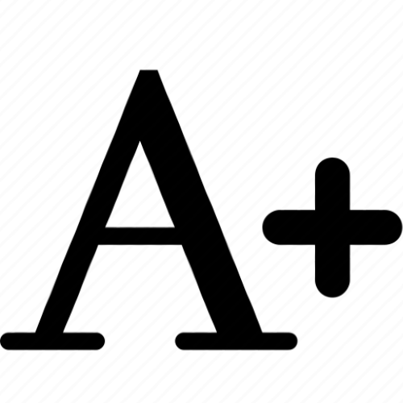
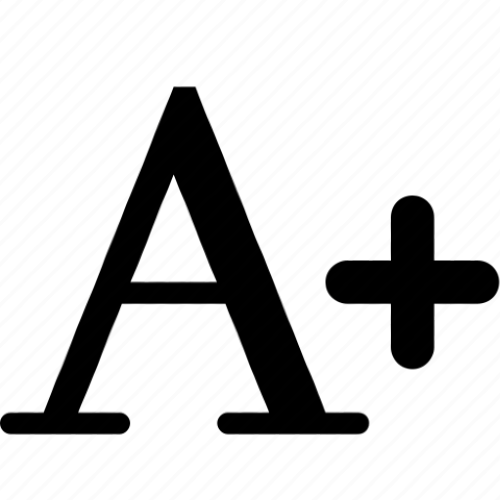

Considerada a categoria maior dentre os diversos níveis de perda auditiva que variam entre surdez leve à anacusia. e que tem como níveis intermediários a surdez moderada, a surdez acentuada, a surdez severa e a surdez profunda.
Por essa classificação entende-se que o termo “Deficiência auditiva” não tem o mesmo significado de “Surdez” e o mesmo acontece com “Deficiência visual” e “Cegueira”. Em conclusão, cada um dos termos deve ser utilizado em situações diferentes. Existe uma preferência entre alguns surdos na escolha dos termos “Surdo” ou “Pessoa com deficiência auditiva”, mas, no plano formal de sassaki foi adotada a seguinte classificação:
-Deficiência física
-Deficiência mental
-Deficiência auditiva
-Deficiência visual
-Deficiência múltipla